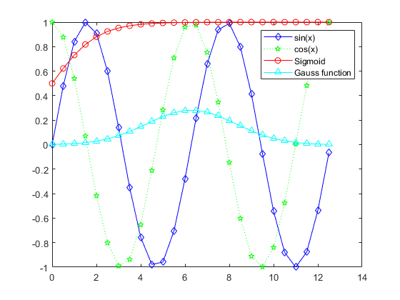
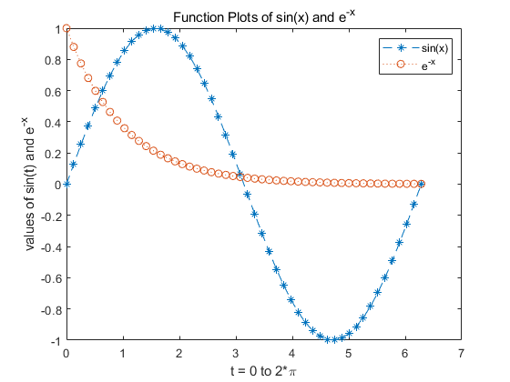
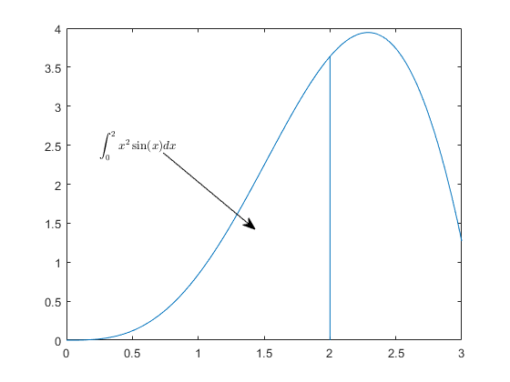
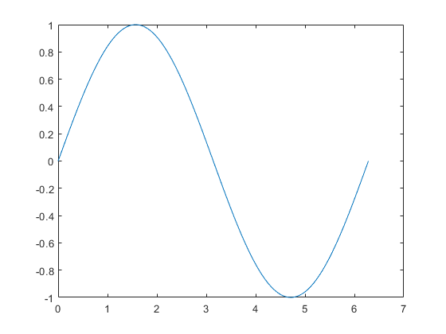

clear,close,clc;
x=0:0.5:4*pi;
y=sin(x);
h=cos(x);
w=1./(1+exp(-x));
g=(1/(2*pi*2)^0.5).*exp((-1.*(x-2*pi).^2)./(2*2^2));
plot(x,y,'bd-',x,h,'gp:',x,w,'ro-',x,g,'c^-');
legend('sin(x)','cos(x)','Sigmoid','Gauss function');

clear,close,clc;
x=linspace(0,2*pi,50);
y1=sin(x);
y2=exp(-x);
plot(x,y1,'--*',x,y2,':o');
legend('sin(x)','e^{-x}');
xlabel('t = 0 to 2*\pi');
ylabel('values of sin(t) and e^{-x}');
title('Function Plots of sin(x) and e^{-x}');

clear,close,clc;
x=linspace(0,3);
y=x.^2.*sin(x);plot(x,y);
line([2,2],[0,2^2*sin(2)]);
str='$$ \int_{0}^{2} x^2\sin(x) dx $$';
text(0.25,2.5,str,'Interpreter','latex');
annotation('arrow','x',[0.32,0.5],'Y',[0.6,0.4]);

clear,close,clc;
x=linspace(0,2*pi,1000);
y=sin(x);
plot(x,y);
set(gcf,'Color',[1,1,1]);
